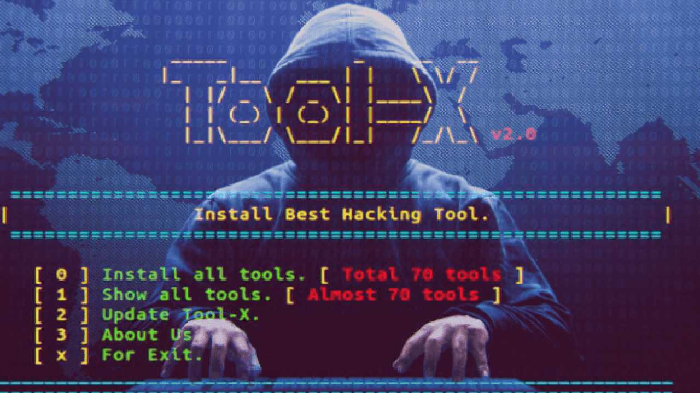
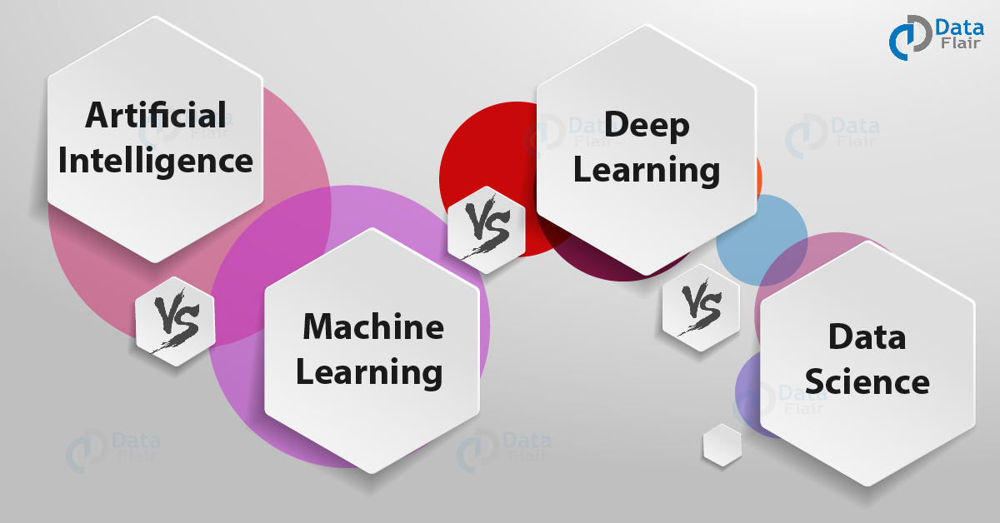
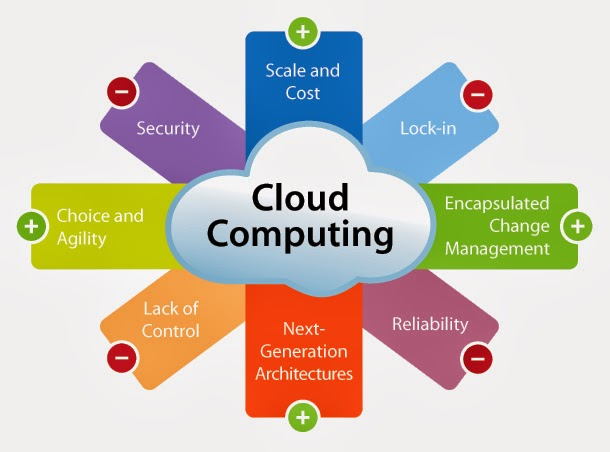

Some Fascinating Topics
|
 Kali Linux Kali Linux is a Debian-based Linux distribution aimed at advanced Penetration Testing and Security Auditing.Kali Linux is developed by Mati Aharoni and Devon Kearns of Offensive Security through the rewrite of BackTrack. It is funded and maintained by Offensive Security, a leading information security training company.Kali Linux has over 600 preinstalled penetration-testing programs.Kali Linux has been and will always be free to use. |  ML & AI Machine learning is a method of data analysis that automates analytical model building. It is a branch of artificial intelligence based on the idea that systems can learn from data, identify patterns and make decisions with minimal human intervention.Artificial Intelligence (AI) is a rapidly advancing technology, made possible by the Internet, that may soon have significant impacts on our everyday lives. AI traditionally refers to an artificial creation of human-like intelligence that can learn, reason, plan, perceive, or process natural language. These traits allow AI to bring immense socioeconomic opportunities, while also posing ethical and socio-economic challenges. |
Quantum Computers A quantum computer is any device for computation that makes direct use of distinctively quantum mechanical phenomena, such as superposition and entanglement, to perform operations on data.In Quantum computers information is stored as Qubits (Quantum bits).In 2015, Google and NASA reported that their new 1097-qubit D-Wave quantum computer had solved an optimization problem in a few seconds. That’s 100 million times faster than a regular computer chip.They claimed that a problem their D-Wave 2X machine processed inside one second would take a classical computer 10,000 years to solve. D-Wave 2000Q Quantum Computer costs around $15 Million. |
 Cloud Computing
Cloud computing is the delivery of different services through the Internet. These resources include tools and applications like data storage, servers, databases, networking, and software.
Rather than keeping files on a proprietary hard drive or local storage device, cloud-based storage makes it possible to save them to a remote database. As long as an electronic device has access to the web, it has access to the data and the software programs to run it.Cloud computing is a popular option for people and businesses for a number of reasons including cost savings, increased productivity, speed and efficiency, performance, and security. |
What Is Hacking
The objectives of hacking
More often than not, the intent of hacking is mostly mala fide i.e. criminal or malicious intent, either to commit some fraud or to cause some financial or reputational harm to the person, group or entity so hacked. This is done through stealing of confidential data or embezzlement of funds or other monetary resources, causing business disruptions, spreading of incorrect and malicious rumours, other misleading information which is socially detrimental. Many a time, hacking is also defined as a form of cyber or internet crime which is punishable by law. However, there is another side to hacking which is done on a professional level by accredited institutions and government law agencies. This is to counter the wrong intentions of the hackers or to prevent any harm being caused to individuals, bodies or associations. It is also undertaken for the safety and protection of the citizens and society at large.
Types Of Hackers
1.Ethical Hacker (White hat):- A hacker who gains access to systems with a view to fix the identified weaknesses. They may also perform penetration Testing and vulnerability assessments.
2.Cracker (Black hat):- A hacker who gains unauthorized access to computer systems for personal gain. The intent is usually to steal corporate data, violate privacy rights, transfer funds from bank accounts etc.
3.Grey hat:- A hacker who is in between ethical and black hat hackers. He/she breaks into computer systems without authority with a view to identify weaknesses and reveal them to the system owner.
4.Script kiddies:- A non-skilled person who gains access to computer systems using already made tools.
5.Hacktivist:- A hacker who use hacking to send social, religious, and political, etc. messages. This is usually done by hijacking websites and leaving the message on the hijacked website.
6.Phreaker:- A hacker who identifies and exploits weaknesses in telephones instead of computers.
Types Of Hacking
One of the most frequent threats of hacking is those faced by the websites. It is very common to see a particular website or online account being hacked open intentionally using unauthorized access and its contents being changed or made public. The web sites of political or social organizatiohe frequent targets by groups or individuals opposed to them. It is also not uncommon to see governmental or national information website being hacked. Some of the well-known methods in hacking are:-
1.Phishing :-
This implies replicating the original website so that the unsuspecting user enters the information like account password, credit card details, which the hacker seizes and misuses. The banking websites are the frequent target for this.
2.Virus
These are released by the hacker into the files of the website once they enter into it. A computer virus is malicious code that replicates by copying itself to another program, computer boot sector or document and changes how a computer works.Many viruses also include evasion or obfuscation capabilities that are designed to bypass modern antivirus and antimalware software and other security defenses.The purpose is to corrupt the information or resources on the website.
3.UI redress
Clickjacking (classified as a User Interface redress attack, UI redress attack, UI redressing) is a malicious technique of tricking a user into clicking on something different from what the user perceives, thus potentially revealing confidential information or allowing others to take control of their computer while clicking on seemingly innocuous objects, including web pages.In this method the hacker creates a fake user interface and when the user clicks with the intent of going to a certain website, they are directed to another site altogether.
4.Cookie theft
Hackers accesses the website using malicious codes and steal cookies which contain confidential information, login passwords etc.
5.DNS spoofing
This basically uses the cache data of a website or domain that the user might have forgotten about. It then directs the data to another malicious website.
6.DDos Attack
A distributed denial-of-service (DDoS) attack is a malicious attempt to disrupt normal traffic of a targeted server, service or network by overwhelming the target or its surrounding infrastructure with a flood of Internet traffic. DDoS attacks achieve effectiveness by utilizing multiple compromised computer systems as sources of attack traffic. Exploited machines can include computers and other networked resources such as IoT devices.
7.SQL Injection
SQL injection is a web security vulnerability that allows an attacker to interfere with the queries that an application makes to its database. It generally allows an attacker to view data that they are not normally able to retrieve. This might include data belonging to other users, or any other data that the application itself is able to access. In many cases, an attacker can modify or delete this data, causing persistent changes to the application's content or behavior.
In some situations, an attacker can escalate an SQL injection attack to compromise the underlying server or other back-end infrastructure, or perform a denial-of-service attack.
8.Keylogger Injection
The Keylogger that are very simple and dangerous malicious code.
The malware records keystrokes , captures all of the user’s actions on the keyboard, and to send all that has been recorded to the hackern ; it also installs a malicious script that produces an in-browser cryptocurrency miner.If a hacker succeeds in obtaining data, then the result of the hacking will be stolen admin credentials that can allow hackers to easily log into your website.
9.Non-Targeted Website Hack
In some cases, hackers don’t target a specific website. They are more interested in massive hacking.
It is easy to suffer from a non-targeted attack – you just need to overlook any CMS, plugin or template vulnerability. Any gap is a chance to get into the hacker’s sight and become a victim during the next attack.
Hackers can find websites with similar weaknesses easily. They can always use Google’s Hacking Database to receive a list of vulnerable websites that have the same properties. For example, hackers can find all indexed websites that have a vulnerable plugin installed. Or websites with unhidden catalogues.
10.Brute Force
A Brute Force Attack is the simple method to gain access to a website. It tries various combinations of the passwords again and again until it gets in. This repetitive action is like an army attacking a fort.
How to guard against hacking?
Hacking is a persistent threat affecting the very security of a nation and its citizens. At the individual level, it can cause untold financial losses by sometimes wiping away the entire hard-earned financial savings of the person. At the organizational level, it has led to the theft of date leading to major financial losses and long term repercussions. It is imperative to put safeguards at the right time and at all levels to blockade this vicious menace.
1.Update your OS and other software frequently, if not automatically. This keeps hackers from accessing your computer through vulnerabilities in outdated programs (which can be exploited by malware). For extra protection, enable Microsoft product updates so that the Office Suite will be updated at the same time. Consider retiring particularly susceptible software such as Java or Flash, especially as many sites and services continue to move away from them.
2.Download up-to-date security programs, including anti-malware software with multiple technologies for protecting against spyware, ransomware, and exploits, as well as a firewall, if your OS didn’t come pre-packaged with it. (You’ll want to check if your OS has both firewall and antivirus built in and enabled by default, and whether those programs are compatible with additional cybersecurity software.)
3.Destroy all traces of your personal info on hardware you plan on selling. Consider using d-ban to erase your hard drive. For those looking to pillage your recycled devices, this makes information much more difficult to recover. If the information you’d like to protect is critical enough, removing the platters where the information is stored then destroying them is the way to go.
4.Do not use open Wi-Fi on your router; it makes it too easy for threat actors to steal your connection and download illegal files. Protect your Wi-Fi with an encrypted password, and consider refreshing your equipment every few years. Some routers have vulnerabilities that are never patched. Newer routers allow you to provide guests with segregated wireless access. Plus, they make frequent password changes easier.
5.Create unique passwords for all devices. When you purchase a new device, it often comes with a simple, default password. Many people set up unique passwords for their computer or phone, but neglect to do so for their Internet router or other smart device. Unknown to the user, hackers can easily gain access to these devices, and use them to flood websites with so much traffic the site goes down or hack into your network. If, for example, your “smart” kitchen stove is connected to the Internet and has a simple password, a hacker could use the stove to access your wireless network and hack your computer or phone. When you get a new Internet-connected device, you should be sure to create a strong, unique password for it. The key aspects of a strong password are length (the longer the better); a mix of letters (upper and lower case), numbers, and symbols, no ties to your personal information, and no dictionary words.
6.Use multifactor authentication on your accounts. Multifactor authentication works like this: When you enter your password for your email account, for example, you are directed to a page that asks for a four-digit code. Your email provider then sends a unique, temporary code in a text message or to another email account. You must enter the code, which expires after a short amount of time, to access your account. This means that hackers who obtained your password still can’t access your account unless they also have access to that verification code, adding another layer of protection. Many email providers, social media websites, and financial institutions now make it easy for users to set up multifactor authentication on their accounts.
7.Be cautious with “Save my information for next time.” Many websites now store personal banking or credit card information to make it easier for you to buy a product or to pay a bill in the future. Although convenient, if your account is hacked, your payment information is more easily available to hackers. Ensure any website where you enter your financial information is secure (the website’s URL should start with “https://”—remember that the “s” is for “secure”), that your password is unique to that account, and that you log out once you are done.
8.Sign up for account alerts. Many email providers and social media websites allow users to sign up for an email or text alert when your account is accessed from a new device or unusual location. These email or text alerts can quickly notify you when an unauthorized person accesses your account and can help minimize the amount of time an unauthorized user has access to your information. If you receive such an alert, login to your account immediately and change the password. Check these emails closely, however, since malicious “phishing” emails often mimic these kinds of alerts.
9.Delete suspicious emails. It is best to delete spam or dubious-looking emails without opening them. If you receive a questionable email from a friend or family member, it is best to contact that person and verify he or she sent it before opening the email or clicking on a link or attachment.
10.Install antivirus and antimalware software. If you do not have security software, install a firewall and antivirus software and keep them up-to-date. There are a variety of reputable products available for free or that have a free trial period. These programs help identify the latest threats and allow a user to remove malicious software from their device. Do your research before installing any program and beware of scams that attempt to lure you into disclosing your personal information or that direct you to download programs that may contain malware.
11.Keep sensitive data off the cloud. “No matter which way you cut it, data stored on the cloud doesn’t belong to you,” says Taggart. “There are very few cloud storage solutions that offer encryption for ‘data at rest.’ Use the cloud accordingly. If it’s important, don’t.”
12.Only install trusted applications. Some criminals make available applications (or “apps”) that look and function like legitimate apps, but actually install malware to your smartphone. Be sure to download apps only from trusted sources, and check the number of downloads and read reviews to makes sure you aren’t downloading a “look-alike” app.
Honorable mentions: Alarmist webpages announcing that there are “critical errors” on your computer are lies. Microsoft/Android will never contact you in person to remove threats. These messages come from scammers, and if you allow them to remotely connect to your computer, they could try to steal your information and your money. If that’s not a Nightmare on Elm Street, then we don’t know what is.
Links For Learning Ethical Hacking And Cyber Crimes
Source Type
Link
Mode
YOUTUBE
Videos
YOUTUBE
Videos
YOUTUBE
Videos
WEBSITE
Reading
WEBSITE
Reading
WEBSITE
Reading
BLOG
Videos & Reading
WEBSITE
Videos & Lectures
WEBSITE
Videos & Reading
WEBSITE
Videos & Reading
If You Have Any Study Material You Can Upload Here.Your Contribution Will Help Us To Make Our Community Better.
| Source Type |
Link |
Mode |
|---|---|---|
| YOUTUBE | Videos | |
| YOUTUBE | Videos | |
| YOUTUBE | Videos | |
| WEBSITE | Reading | |
| WEBSITE | Reading | |
| WEBSITE | Reading | |
| BLOG | Videos & Reading | |
| WEBSITE | Videos & Lectures | |
| WEBSITE | Videos & Reading | |
| WEBSITE | Videos & Reading |
If You Have Any Study Material You Can Upload Here.Your Contribution Will Help Us To Make Our Community Better.
Stay Updated With Latest News And Articles